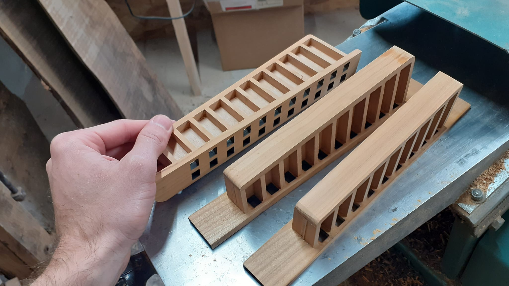

Fabrication
Bien qu'ayant travaillé sur une esthétique et une sonorité singulière, je fabrique des accordéons sur mesure.
Les accordéonistes ont la possibilité de choisir de nombreux éléments qui vont composer leur accordéon : choix du nombre de voix, du plan de clavier, de l’essence de bois (noyer ou merisier), des boutons, etc.
Je me fournis avec des bois et des placages locaux pour la fabrication des caisses, des claviers et des sommiers.
Tout mes accordéons sont montés avec des anches italiennes de qualité Tipo A Mano de chez Voci Armoniche.
